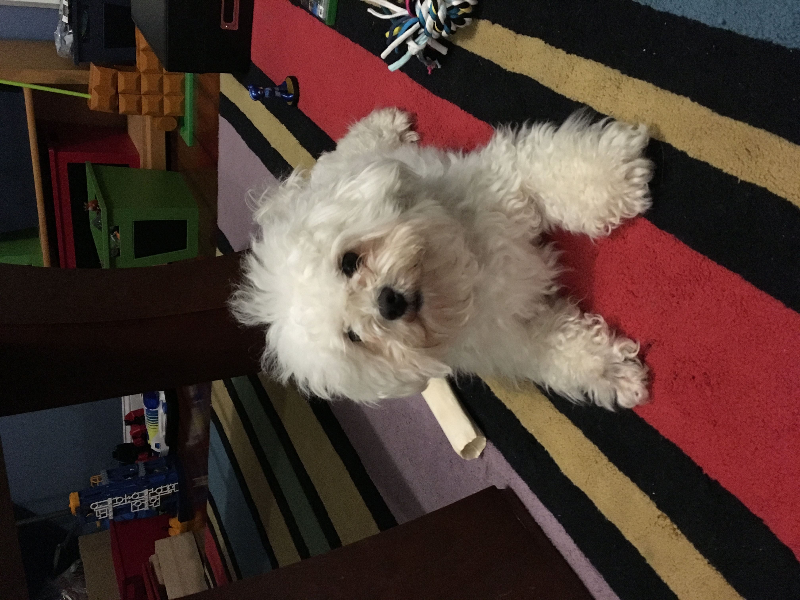
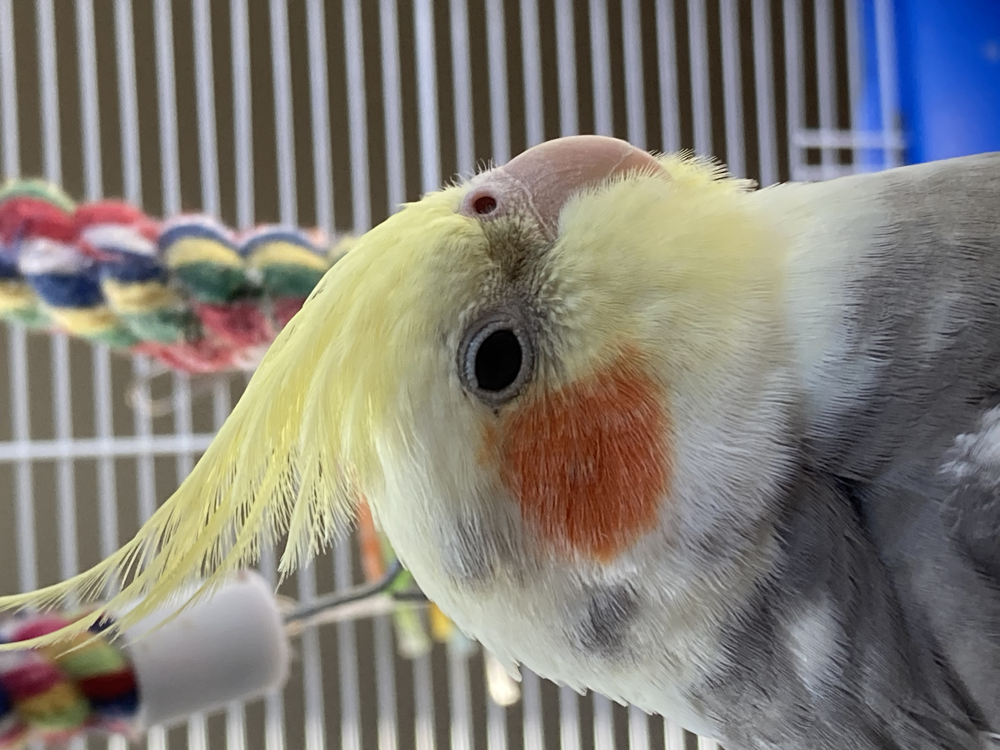

I started to peersue the computer science field all the way back in eigth grade when I decided to take a robotics class. The robotics class taught me the basics of both coding and building robots. Throughout the class I learned how to apply basic problem solving skills to my code to create solutions to what seemed like complex problems. Later on in my freshman year of high school I joined the robotics club founded and run by my older brother, where I further advanced my skills as both a programer and a problem solver. Now if we fast forward to my junior year of high school, that is when I took my first programming class called Python 1. This was also my first experience of taking a class that focused specifically on computer science, rather than computer science and hardware. To catch up to my ever progressing journey in computer science I must finally talk about my senior year of highschool where I took a class called AP Computer Science Principles. As the name implies this class teaches the fundamentals of computer science, it was through this class that my passion for computer science developed and a large part of the reason why I chose computer science as my major.
I live in Newtown Connecticut in a relatively calm area. I have a dog named Gus, A bird named Floyd, and ten chickens.
This is Gus:
And this is Floyd:
